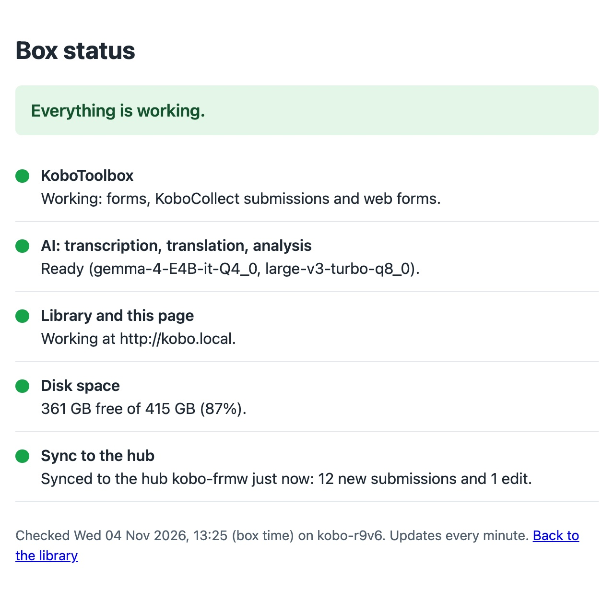

What it is
Syncing uses kobo-transfer, Kobo's open-source tool for copying a project's submissions from one KoboToolbox server to another. Every kit runs a full KoboToolbox server, so a field kit, a hub kit and a KoboToolbox server online are all the same kind of thing to it: a sync copies one project on one server into one project on another.
- One direction. Data goes from the field kits to the hub, and from the hub to a server online. Nothing comes back down, and nothing is deleted anywhere: each kit keeps its own full copy.
- Safe to repeat. Each submission keeps its ID, so a sync only sends what the other side doesn't have yet: new submissions, edits, status changes and AI results added since. Running it twice changes nothing.
- By itself. A field kit paired with its hub syncs whenever it can reach it, every 5 minutes, and its status page says when it last did.
- Several kits into one project. Each kit syncs into the same project on the hub; their submissions sit side by side, and their AI settings are combined, not replaced.
- No internet needed between kits and the hub: a cable, or the base's own network, is enough.
Three ways to run
Deployments mix these, project by project:
| Way | What happens | Suits |
|---|---|---|
| Standalone | One kit, start to finish. Nothing ever leaves it. | Short assessments, the most sensitive data |
| Networked | A kit per site, the same forms on each. Back at base, each kit syncs to the hub, which holds the combined dataset and analyses it, offline. | Several sites or teams, one analysis. Field kits can be the budget tier; only the hub needs the recommended computer. |
| Connected | When any connection appears, the hub or a kit syncs to the organisation's KoboToolbox server, and the data joins its normal data management. | Projects the organisation runs online as well |
For example: a protection project stays standalone on one kit, while a needs assessment runs on four kits, comes together on the hub every evening, and goes to the organisation's server whenever the base's satellite link is up.
What travels
| Part | Kit → hub | Hub → KoboToolbox online |
|---|---|---|
| Submissions | Yes, with their IDs | Yes |
| Photos, audio, files | Yes, byte for byte | Yes |
| Edits | Yes, as edits (see below) | Yes |
| Validation statuses | Yes, and later changes | Yes |
| Reviewed AI results | Yes, as they are | Yes, as manual entries |
| AI results not yet reviewed | Yes, still for review | Not yet: counted, left on the hub |
| AI settings | Added to the hub's | Added to the server's |
| The form | No: deployed beforehand | Only the first time, if asked |
| Deletions | No | No |
AI results are the transcripts, translations and analysis answers on a submission, whether the kit's AI made them or a person typed them; AI settings are the project's transcription and translation languages and its analysis questions. Why unreviewed results don't go online yet is below.
Each kit's submissions say which site they came from because the form asks: a Site question, answered by the enumerator. The hub then shows, filters and exports by site.
AI results and review
The kit's AI suggests and people decide: a transcript, translation or analysis answer made by the AI is marked as a suggestion until someone accepts or verifies it in KoboToolbox. Syncing keeps that true.
- Kit to hub, every version arrives as it was: the AI's suggestions still marked for review, with their dates and when each was accepted, so the reviewing can happen at the hub, across all sites. If someone accepts a suggestion on the kit later, the next sync passes that on. A review is never undone by a sync.
- To a KoboToolbox server online, only reviewed results are sent, and they arrive as if typed in by hand. KoboToolbox's servers can't yet take an AI suggestion as a suggestion, and sending it as an accepted entry would make the AI's work look like a person's. The sync lists how many unreviewed results it left behind. Review them on the hub first, or keep that analysis on the hub.
The kits can take AI results as they are because of a small addition to the kits' KoboToolbox (an import for the analysis data). It is meant for the main KoboToolbox product too; once a server online has it, AI suggestions will reach it as suggestions, with nothing to change on the kits.
Before the mission
Whoever prepares the kits, and support at the base, set syncing up once. Every kit already has what it needs: kobo-transfer, and a KoboToolbox account called sync made when the kit was first switched on, with its sync key on the kit's label card. That account isn't an administrator and sees only the projects shared with it.
- One form, deployed everywhere. Deploy the same XLSForm on every field kit and on the hub, with the same project name, before data collection starts. Include a Site question. Projects are matched by name, so don't rename one on one kit only, and don't redeploy the hub's form mid-mission (see Limits).
- Share it with the user
sync, in KoboToolbox under Settings → Sharing:- on each field kit, with View submissions;
- on the hub, with View submissions, Add submissions, Edit submissions and Validate submissions.
- A cable, or a network at base. An Ethernet cable from a field kit to the hub, or a switch or router the kits and the hub plug into. The hub needs an address on it, for example
192.168.8.20.
Pairing a field kit with its hub
Once per field kit, by support, signed in to the field kit over SSH while it is connected to the hub. Give the hub's address, then paste the hub's sync key from the hub's label card (it isn't shown or kept in the shell's history):
/root/kobo-box-ai/box/sync.py hub 192.168.8.20 - Paired with the hub kobo-frmw at 192.168.8.20 (its account sync). syncs: Household water survey (aHagUEc… -> kobo-frmw aRD5brE…)
The field kit asks that address which kit it is, checks that the key works there, and lists the projects that will sync. From then on it reaches the hub by name, kf.kobo-frmw.local, whatever its address. A project that won't sync is listed with the reason: not on the hub, or not shared there.
Every kit calls its own KoboToolbox kf.kobo.local, as phones know it, and also answers to its own name, kf.its-name.local. That's how kits tell each other apart.
Day to day: connect the kit
Back at base, plug the field kit's cable into the hub, or into the base network. That's all. Every 5 minutes the kit checks whether the hub answers, and when it does, it sends what the hub doesn't have yet: new submissions with their photos and recordings, edits, validation statuses, AI results. A day's collection takes seconds to a few minutes, more with many recordings. Unplug it when the status page says it's done.
The kit's status page (kobo.local/status) has a row for it:
Syncing to the hub kobo-frmw now. Leave the kit connected to it.
It's sending: don't unplug the cable.Synced to the hub kobo-frmw just now: 12 new submissions and 1 edit.
Done. It syncs again by itself while connected.Last synced to the hub kobo-frmw 3 hours ago. The hub isn't connected now; the kit syncs by itself when it is.
Normal in the field. After 3 days without a sync it turns amber, as a reminder.


Nothing else to do: unplug the cable once it says synced, or leave the kit connected and it keeps the hub up to date every 5 minutes.
The hub's own status page has no sync row: it only receives.
Support can also sync at once, or see what happened, on the field kit:
/root/kobo-box-ai/box/sync.py run # now, instead of waiting up to 5 minutes /root/kobo-box-ai/box/sync.py projects # which projects sync, and why others don't /root/kobo-box-ai/box/sync.py status # the last run in detail
Edits and corrections
Submissions get corrected, on the field kit or on the hub. Each sync compares the two copies:
| Edited | What the sync does |
|---|---|
| On the field kit | After it was sent: sends the edit, and the hub's copy becomes the edited one, still one submission, its photos, recordings and AI results kept. Several edits in a row arrive as the last one. |
| On the hub | Keeps the hub's version. A correction made at the hub is never overwritten by the kit's older copy. |
| On both | Since the last sync: changes neither copy, and the status page says so ("changed both here and on the hub"). Support decides which one to keep (see below); the next sync does the rest. |
Deleting a submission on one kit doesn't delete it anywhere else.
Syncing to KoboToolbox online
From the hub (or a field kit, without a hub) to the organisation's KoboToolbox server, over whatever connection there is. This isn't automatic yet: support runs kobo-transfer on the hub, with a settings file per project naming the hub's project (src) and the server's (dest):
{
"src": {"kf_url": "http://kf.kobo.local", "kc_url": "http://kc.kobo.local",
"token": "a hub account's API key", "asset_uid": "the hub's project ID"},
"dest": {"kf_url": "https://kf.kobotoolbox.org", "kc_url": "https://kc.kobotoolbox.org",
"token": "the server account's API key", "asset_uid": "the server's project ID"}
}
cd /root/kobo-transfer python3 run.py -c config-online.json --sync --validation-statuses --analysis-data
| Server | kf_url | kc_url |
|---|---|---|
| Global | https://kf.kobotoolbox.org | https://kc.kobotoolbox.org |
| EU | https://eu.kobotoolbox.org | https://kc-eu.kobotoolbox.org |
| The organisation's own | its KoboToolbox address | its KoboCollect address |
- The first time, deploy the same form on the server and use its ID, or leave
dest'sasset_uidempty and add--assetonce to create the project there (it prints the new ID: put it in the file, and never use--assetagain for it). API keys are under Account settings → Security; keep the file readable by the administrator only (chmod 600). - A poor link is fine. Submissions go one by one, in small batches; a run that stops half-way loses nothing, and the next one sends only what's still missing. Edits and validation statuses follow as between kits.
- AI results: only the reviewed ones (see above); the run says how many unreviewed ones it left on the hub.
When something goes wrong
![The status page: Working, but something needs attention. Sync to the hub in amber: Synced to the hub kobo-frmw just now: 3 new submissions. 1 submission of Household water survey was changed both here and on the hub since the last sync: neither copy was changed. Shelter assessment isn't synced: the hub has no project with that name shared with its sync account. Then what to do: support decides which copy to keep with sync.py resolve, and on the hub, deploy the same form with the same name and share it with the user sync.](static/sync/status-attention.jpg)
The status page says what to do. Nothing is lost while a row is amber or red, and the kit tries again every 5 minutes: once the cause is fixed, the next sync carries on by itself.
The hub isn't connected
(amber after 3 days). The kit hasn't reached the hub for that long. Connect it to the hub: it syncs by itself within 5 minutes.‘Project’ isn't synced: the hub has no project with that name shared with its sync account.
The project is shared with sync on the kit, but not on the hub, or the hub's has another name. On the hub, deploy the same form with the same name and share it with sync.N submissions couldn't be sent: the hub's sync account isn't allowed to add them.
The hub's project is shared with sync, but without every permission it needs. On the hub, share it with View, Add, Edit and Validate submissions.N submissions were changed both here and on the hub.
Edited on both sides since the last sync (see above). Support compares the two copies (sync.py statuslists them) and chooses one:sync.py resolve uuid --keep heresends the field kit's at the next sync,--keep hubleaves the hub's.Syncing failed: the hub doesn't accept this kit's key any more.
The hub's sync key changed (for example, the hub was replaced). Support pairs the kit again, with the key on the hub's label card.
The details of each project's last run, including kobo-transfer's own log, are in /var/lib/kobo-box/sync/ on the field kit, readable by its administrator only: they hold both keys.
What was tested
On the test environment that simulates the kits, in two rounds, with all internet traffic cut off: the machines reached only each other, over a private network.
Kits as they are delivered. A content pack built with the sync software, installed on three newly made machines with no internet from the start, then switched on for the first time: a hub and two field kits, each with its own name, sync account and key (11 to 15 minutes each). The same form on all three, shared with sync; photo and audio questions; the AI transcribed, translated and answered an analysis question on one submission. Each field kit paired with the hub once, then everything ran from the timer:
- Both kits synced by themselves within 5 minutes of pairing: 9 submissions on the hub, each once, with photos and recordings byte for byte, validation statuses, and AI results identical down to their review state. The status pages said "Synced to the hub just now".
- Edits: two submissions edited on a field kit (one of them twice, one with AI results) arrived as edits: still 9 submissions on the hub, the edited answers, attachments and AI results kept. A correction made on the hub was kept. A submission edited on both sides was left alone on both, and the status page said so.
- Edited on both sides: support chose one copy with
sync.py resolve, once each way: keeping the field kit's sent it as an edit at once, keeping the hub's left it; the status page was green again. - A large hub: with 1,100 more submissions from a third site on the hub, a field kit's next sync sent its 2 new submissions and 1 edit in 5 seconds; the hub had 1,111 submissions, each once.
- When things go wrong: a field kit cut off from the hub said when it last synced and that the hub wasn't connected; with a permission taken away from the hub's sync account, the status page said which one to give back. Both carried on by themselves at the next sync once fixed.
- Restoring a backup onto a kit that had lost its pairing brought the pairing back, and the next sync worked.
Earlier, with the sync tool alone (copies of one test machine): two kits into one hub, repeat runs sending nothing, status changes passed on, AI results kept as they are, and reviewed-only copying to a standard KoboToolbox server. The addition to KoboToolbox that takes AI results as they are passes KoboToolbox's own test suite, with ten new tests for it.
Limits
- Not yet tested against KoboToolbox's servers online, nor on the field hardware: the tests above ran on the test environment.
- To KoboToolbox online, by hand for now (see above); between kits it's automatic.
- The hub needs an address the field kit can reach, so the base network (or the cable) has to give both an address. Finding the hub on a bare cable by itself is to be tested on the field hardware.
- Pairing is done by support, over SSH, once per field kit.
- Don't redeploy the hub's form mid-mission. Submissions take the version of the form on the receiving side; after a redeployment, a later sync can bring duplicates (a known kobo-transfer limit).
- Unreviewed AI results don't reach KoboToolbox's servers until they have the import (see above).
- The site comes from the form. Nothing marks a kit's submissions by itself.
- Between kits it's plain HTTP on the cable or base network, as on the kit's Wi-Fi: use a network only staff are on. To KoboToolbox online it's HTTPS.
Technical details
- On the kit:
box/sync.py(pairing, matching projects, running kobo-transfer for each, the status file), a systemd timer every 5 minutes on paired kits only, and the status page row. Every kit's edge answers tokf.name.localas well askf.kobo.local, and pairing puts the hub's name in/etc/hosts. The box's README (remote/box/) has the details. - kobo-transfer, branch
supplement-api(from kobotoolbox/kobo-transfer1ae7a04): AI results through KoboToolbox's current analysis API, each source's analysis settings added to the destination's, edits sent as edits (and edits on both sides left for a person), the server's links followed through the configured address, a summary file for unattended runs, an error exit when anything failed. To be proposed upstream. - KoboToolbox:
POST /api/v2/assets/<project>/data/<submission>/supplement/import/stores another server's analysis versions as they are, merged by version ID, review state only ever moving forward, each version checked against the action's own rules. kobo-transfer uses it where it exists and falls back to reviewed results otherwise. On the kits it is part of the local-AI addition to KoboToolbox (branchlocal-nlp-backend). - The test harness and how the test machines were set up are in
remote/sync/and its README; the results inremote/results/NOTES.md.